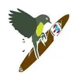

Pitirre Cigars
Torcedor / marca artesanal · Trujillo Alto, Puerto Rico
Pitirre Cigars aparece en La Hoja Boricua, la guía de cigarros de artesanos boricuas.

Torcedor / marca artesanal · Trujillo Alto, Puerto Rico
Pitirre Cigars aparece en La Hoja Boricua, la guía de cigarros de artesanos boricuas.